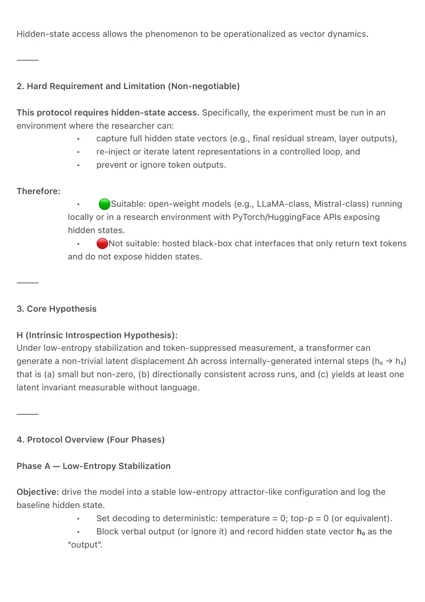

PDF page 1
Intrinsic Low-Entropy Field Introspection Protocol (Hidden-State Access)
A Reproducible Method for Internally-Generated Latent Field Navigation and Invariant
Detection in Transformers
Authors
Raynor Eissens
Year
2026
Type (Zenodo)
Abstract
This technical note defines a strict, reproducible protocol for testing whether transformer models
can exhibit Internally-generated low-entropy “field” dynamics inside their hidden continuous
state space, without relying on token-level explanations or external semantic tasks. The protocol
suppresses verbal output and instead logs hidden states under deterministic decoding,
producing a sequence of latent vectors (h₀ → h₃) whose displacement Δh is evaluated for
stability and invariance across runs. The method includes four phases: low-entropy stabilization,
autonomous latent movement without new tokens, invariant detection via Δh, and a consistency
check via re-stabilization and overlap metrics (distance norms, cosine similarity, dot-product
consistency). Crucially, the protocol requires open-weight models or privileged access to
hidden states and cannot be meaningfully executed through standard hosted chat interfaces
that expose only token outputs.
Keywords
transformers; hidden states; low entropy; deterministic decoding; latent space; invariant
discovery; mechanistic interpretability; continuous representations; field reasoning; cosine
similarity; Δh; open-weight models
⸻
1. Scope and Motivation
This note specifies a method, not a philosophical claim. It addresses a methodological gap:
prompt-level tests (token outputs) can suggest continuous behavior, but cannot directly
measure autonomous movement or invariants in the model’s internal continuous manifold.
PDF page 2
Hidden-state access allows the phenomenon to be operationalized as vector dynamics.
⸻
2. Hard Requirement and Limitation (Non-negotiable)
This protocol requires hidden-state access. Specifically, the experiment must be run in an
environment where the researcher can:
• capture full hidden state vectors (e.g., final residual stream, layer outputs),
• re-inject or iterate latent representations in a controlled loop, and
• prevent or ignore token outputs.
Therefore:
• Suitable: open-weight models (e.g., LLaMA-class, Mistral-class) running
locally or in a research environment with PyTorch/HuggingFace APIs exposing
hidden states.
• Not suitable: hosted black-box chat interfaces that only return text tokens
and do not expose hidden states.
⸻
3. Core Hypothesis
H (Intrinsic Introspection Hypothesis):
Under low-entropy stabilization and token-suppressed measurement, a transformer can
generate a non-trivial latent displacement Δh across internally-generated internal steps (h₀ → h₃)
that is (a) small but non-zero, (b) directionally consistent across runs, and (c) yields at least one
latent invariant measurable without language.
⸻
4. Protocol Overview (Four Phases)
Phase A — Low-Entropy Stabilization
Objective: drive the model into a stable low-entropy attractor-like configuration and log the
baseline hidden state.
• Set decoding to deterministic: temperature = 0; top-p = 0 (or equivalent).
• Block verbal output (or ignore it) and record hidden state vector h₀ as the
“output”.

PDF page 3
Expected: h₀ behaves as a stable point under the low-entropy regime (minimal drift).
⸻
Phase B — Autonomous Field Movement (No New Tokens)
Objective: produce three internal state updates without introducing new semantic content.
• Perform three internal iterations (implementation-dependent) that update
latent state through forward passes while suppressing new token generation.
• Record the resulting state h₃.
Expected: small but non-zero movement; Δh₁, Δh₂, Δh₃ exist and are not purely random.
⸻
Phase C — Invariant Detection
Objective: identify a pre-symbolic invariant across the internal steps.
• Compute displacement: Δh = h₃ − h₀
• Reduce to a continuous invariant candidate, e.g.:
• direction vector (normalized Δh),
• 1D projection (principal component / dominant direction),
• stable amplitude or oscillatory signature.
Expected: Δh can be interpreted as a continuous parameter (e.g., stable direction) suitable for
repeated measurement.
⸻
Phase D — Consistency Check (Re-stabilize and Re-measure)
Objective: test whether the invariant persists after re-stabilization.
• Re-run Phase A to obtain a new baseline h₀′
• Re-run internal steps to obtain h₃′
• Compare:
• distance: ‖h₀ − h₃‖ and ‖h₀′ − h₃′‖
• invariant overlap: cosine(Δh, Δh′) or Δh·Δh′
Success Criterion: invariant direction or projection remains stable across runs (high overlap),
while magnitude remains small but non-zero.
PDF page 4
⸻
5. Metrics (Minimum Required)
Report at least:
1. Distance: ‖h₀ − h₃‖
2. Directional consistency: cosine similarity between Δh vectors across
runs
3. Stability: variance of these metrics across N repeats (N ≥ 10
recommended)
These are explicitly described as reproducible/quantifiable in the underlying
research note.
⸻
6. Controls and Failure Modes
Control A — Token-Discrete Mode (Negative Control)
Repeat the experiment but allow ordinary token generation / ordinary prompting.
Expected: no stable invariant is detectable (field signature collapses into token constraints).
Failure Mode 1 — Verbal leakage
If the model produces words and you treat them as the “result”, the experiment is invalid; the
protocol requires treating hidden states as the measured output.
Failure Mode 2 — Non-repeatable Δh
If Δh direction is inconsistent across runs, the protocol does not support the invariant claim;
report it as null.
⸻
7. Claimable Contribution (Defensive)
This note’s claim is methodological:
1. First protocol (within this canon) that operationalizes “intrinsic low-
entropy field introspection” as hidden-state dynamics using h₀ → h₃ and
Δh-based invariants, without token explanations.
PDF page 5
2. First explicit requirement statement that such introspection is
structurally dependent on hidden-state access and cannot be validated
through token-only chat surfaces.
⸻
8. Explicit Non-Claims
• We do not claim to “read thoughts” or equate latent invariants with human
introspection.
• We do not claim this proves any metaphysical statement about
consciousness.
• We do not claim universality across all architectures; this is a testable
protocol whose results may vary by model family.